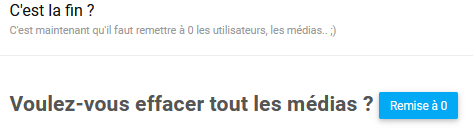
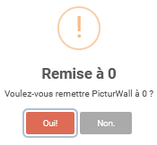

Page remise à 0¶
La page de remise à 0 de PicturWall ressemble à ceci :

Cette page vous permet de remettre à 0 tout envoi sur PicturWall.
Remettre à 0 PicturWall¶
Afin de remettre à 0 PicturWall, vous allez devoir cliquer sur le bouton « Remise à 0 ».
Ensuite, vous allez voir cette fenêtre apparaître :

Il vous suffit de cliquer sur « Oui ! » pour remettre les méidas de PicturWall à 0.
Important
Penser à récupérer l’archive contenant tous les médias avant de remettre à 0 PicturWall.
Note
La remise à 0 n’affecte pas les paramètres de PicturWall.